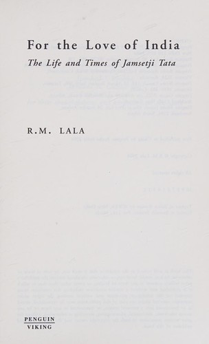

Why Did Air India Fail?
The Maharaja Flew First Until the State Took the Controls
📜 What Happened
It began in 1932 as JRD Tata's Tata Airlines, became Air India in 1946, and flew so well that in the jet age it was one of the world's most admired airlines, its Maharaja mascot a global byword for hospitality. In 1953 the state nationalized it, and for a while the halo outlived the handover. Then the disease of public-sector stewardship set in: routes awarded by politics rather than economics, hiring and promotion by patronage, unions that out-armed management, fleet choices that satisfied committees instead of route maps. Private rivals (Jet Airways, then IndiGo) took the traffic with newer planes, sharper costs and on-time service while Air India's share melted. The 2007 merger with Indian Airlines fused two bureaucracies instead of fixing one. Debt compounded past ₹58,000 crore; taxpayer bailouts kept the lights on; a 2018 privatization attempt died without a single bid. In October 2021 the government sold the airline back to Talace, a Tata subsidiary, for ₹18,000 crore (mostly debt takeover), and the Tatas took control in January 2022: a 68-year loop closed, with the founder's family reclaiming what the state had flown into the ground.
☠️ The Fatal Mistake
Mistook ownership for stewardship: political control replaced commercial discipline in every decision that mattered (routes, fleets, hiring, service), and the losses were always someone else's money, so nobody with power ever had to fix anything.
🧠 The Lesson (Free for You)
An institution decays at the speed of its accountability. When the people deciding the strategy never bear its cost, decline is not a risk, it is the default. Great brands can survive bad decades only if someone eventually buys back the values; better to guard the values before they need buying back.
📕 The Antidote Book

The biography of Jamsetji Tata, the founder who planned a nation's industry a century ahead, and whose successors finished what he started because he built institutions, not just businesses.
📖 OPEN THE FULL INTERACTIVE BREAKDOWN →Searchable, filterable, free to read — they paid billions; your lesson is free.